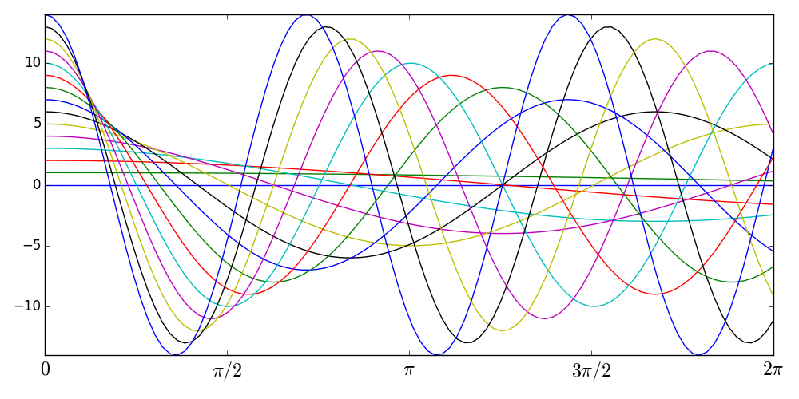
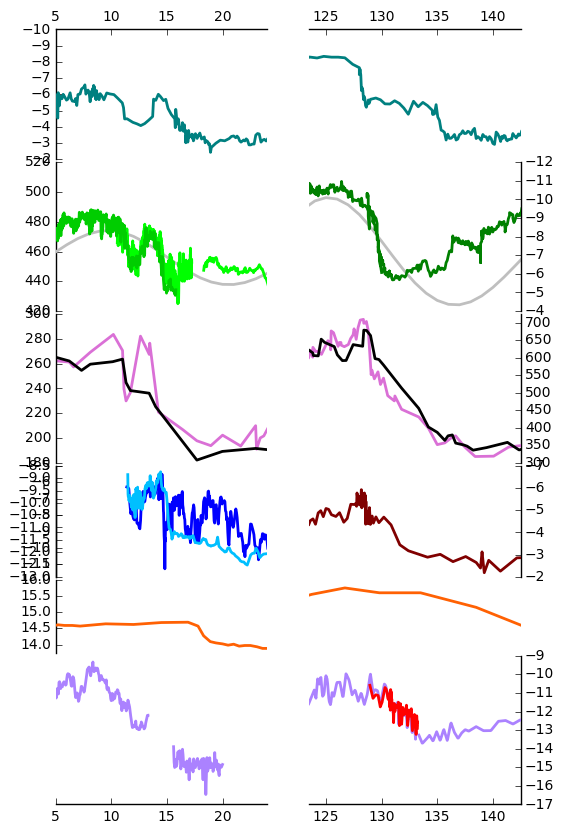
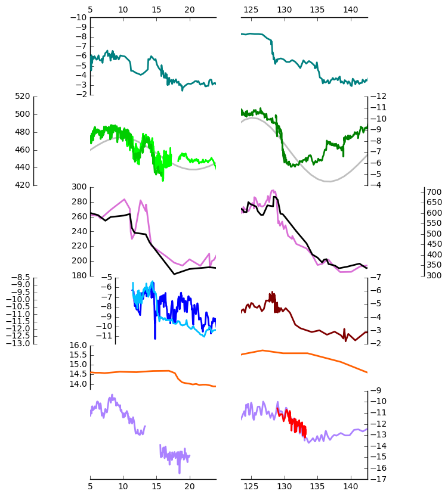
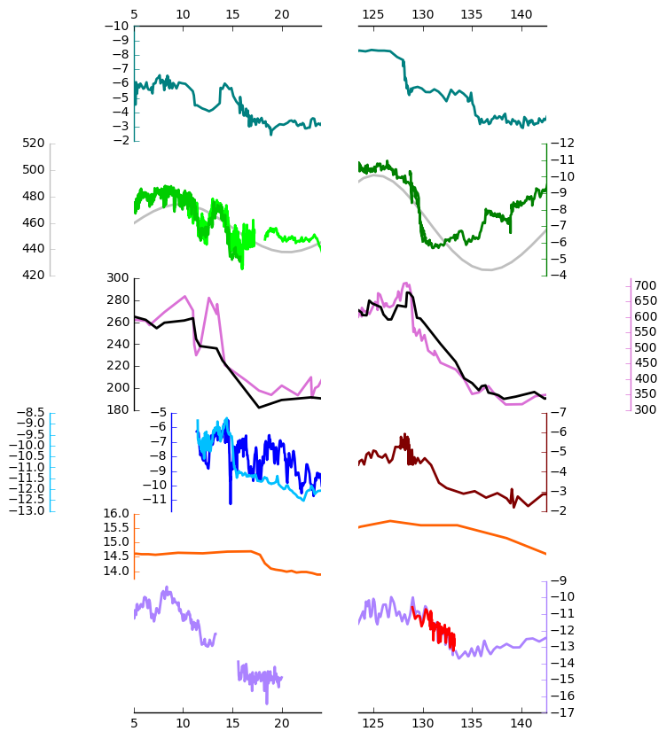
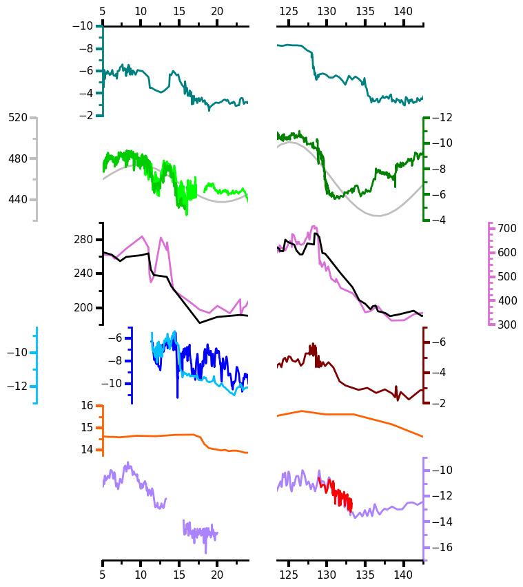
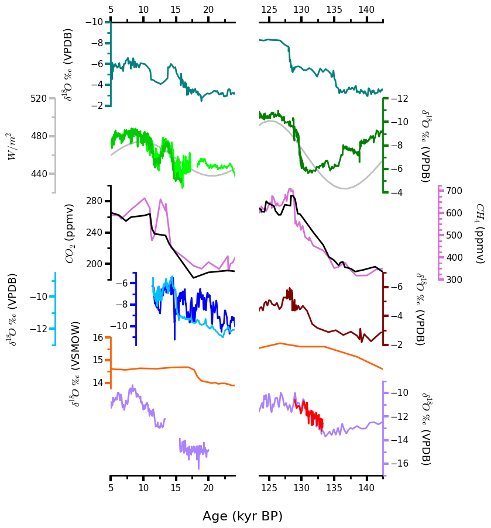
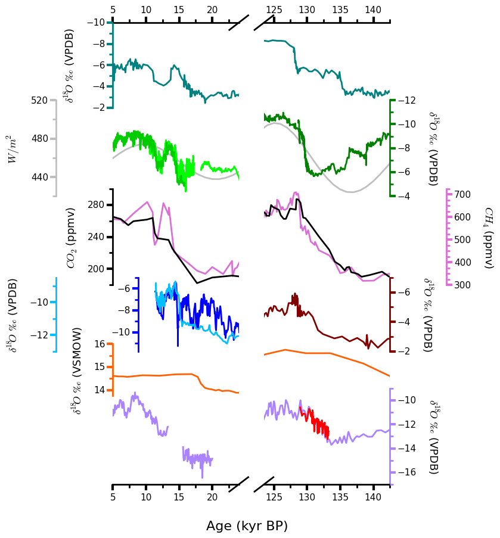

TrendVis
an elegant interface for dense, sparkline-like, quantitative visualizations of multiple series using matplotlib
Mellissa Cross / @mscross
Options
in 21 lines
Initialize
import trendvis
tvfig = trendvis.XGrid([7, 8, 8, 6, 4, 8], xratios=[1, 1],
figsize=(6, 10))
tvfig_y = trendvis.YGrid([7, 8, 8, 6, 4, 8], yratios=[1, 1], figsize=(10, 6))
Tidy
tvfig.cleanup_grid()
Twin rows
tvfig.make_twins([1, 2, 3, 3])
tvfig.cleanup_grid()
Plot
trendvis.plot_data(tvfig,
[[(sorq_age, sorq, '#008080')],
[(hu_age, hu, '#00FF00',[0]),
(don_age, don, '#00CD00', [0]),
(sb_age, sb, 'green', [1])],
[(co2_age, co2, 'black')],
[(cor_age, cor, 'maroon', [1])],
[(dh_age, dh, '#FF6103')],
[(gb_age, gb, '#AB82FF'),
(leh_age, leh, 'red', [1])],
[(insol_age, insol, '0.75')],
[(ch4_age, ch4, 'orchid')],
[(fs_age, fs, 'blue')],
[(cob_age, cob, '#00BFFF')]],
marker=None, lw=2,
auto_spinecolor=False)
All data freely available online through the National Climatic Data Center or as supplementary materials
Modified from Cross et al. (in press), Figure 3
Axis Limits
tvfig.set_xlim([(0, 5, 24), (1, 123.5, 142.5)])
tvfig.set_ylim([(3, -7, -2), (4, 13.75, 16),
(5, -17, -9), (6, 420, 520),
(7, 300, 725), (8, -11.75, -5)])
tvfig.reverse_yaxis([0, 1, 3])

Readability
tvfig.move_spines(twin_shift=[0.45, 0.45,
-0.2, 0.45])

tvfig.autocolor_spines()

Format
tvfig.set_all_ticknums([(5, 2.5), (5, 2.5)],
[(2, 1), (2, 1),
(40, 20), (2, 1),
(1, 0.5), (2, 1),
(40, 20), (100, 25),
(2, 1), (2, 1)])
tvfig.set_ticks(major_dim=(7,3),minor_dim=(4,2),
labelsize=11, pad=6)
tvfig.set_spinewidth(2)

# Special Characters
d18o = r'$\delta^{18}\!O$'
co2label = r'$CO_{2}$'
ch4label = r'$CH_{4}$'
vpdb = ' ' + ur'$\u2030$' + ' (VPDB)'
vsmow = ' ' + ur'$\u2030$' + ' (VSMOW)'
tvfig.fig.suptitle('Age (kyr BP)', y=0.065,
fontsize=16)
tvfig.set_ylabels([d18o + vpdb, d18o + vpdb,
co2label + ' (ppmv)',
d18o + vpdb, d18o + vsmow,
d18o + vpdb, r'$W/m^{2}$',
ch4label + ' (ppmv)', '',
d18o + vpdb, d13c + vpdb],
fontsize=13)

Compact
tvfig.fig.subplots_adjust(hspace=-0.4)

Draw
tvfig.draw_cutout(di=0.075)

ll_ax = tvfig.get_axis(5)
ur_ax = tvfig.get_axis(0)
tvfig.draw_bar(ll_ax, ur_ax, (11, 12.5),
facecolor='g', edgecolor='none',
alpha=0.2)
tvfig.draw_bar(ll_ax, ur_ax, (12.5, 14.5),
facecolor='yellow',
edgecolor='none', alpha=0.2)
tvfig.draw_bar(ll_ax, ur_ax, (14.5, 17.5),
facecolor='g', edgecolor='none',
alpha=0.2)
tvfig.draw_bar(tvfig.axes[5][1],
tvfig.axes[0][1],
(129.5, 136.5), facecolor='g',
edgecolor='none', alpha=0.2)

Text
tvfig.fig.axes[0].text(
14, -8.5, 'Termination I', fontsize=14,
weight='bold', horizontalalignment='center')
tvfig.fig.axes[1].text(
133.23, -8.5, 'Termination II', fontsize=14,
weight='bold', horizontalalignment='center')